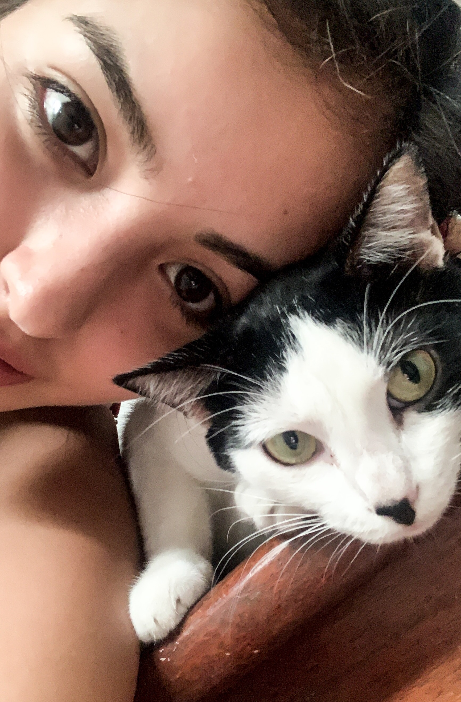

Cozy Cats was born out of a student’s love for cats and a passion for making a difference. As a college student balancing classes and a love for furry companions, I saw countless cats without homes or care. Determined to create a space where every cat has a chance to find love, I opened Cozy Cats—a haven where cats in need can thrive and meet their forever families. Our mission is simple: to connect amazing cats with amazing people. We believe adoption is more than gaining a pet—it's about saving lives and forming lifelong bonds.
Meet Mr. Ravioli, our Cat of the Week! Ravioli is a short-haired tuxedo who loves to cuddle and pounce on his favorite toys. He was found on an abandoned farm, scared and uncertain. But once he got comfortable, he became the cuddliest cat we've ever met. His name? Well, that's because he absolutely loves the smell of ravioli (though he can't have any!). Mr. Ravioli also has a soft spot for tuna treats. Come meet this charming tuxedo cat—you might just find your perfect feline companion!
"We adopted Bella last fall, and she has filled our home with love and endless purrs. I can’t believe we waited this long to adopt!" — Sarah J.
"I wasn’t sure if I was ready for a pet, but then I met Mr. Buttons. He’s my best friend now, always waiting at the door to greet me after work!" — Daniel K.
"The adoption process was smooth, and the team really cares about finding the right match. Our tuxedo cat, Luna, has brought so much joy to our lives—she’s practically royalty in our home now!" — Maria P.
"I never knew a cat could be such a goofball until I met Pickles. Life is just better with him around!" — Samantha K.